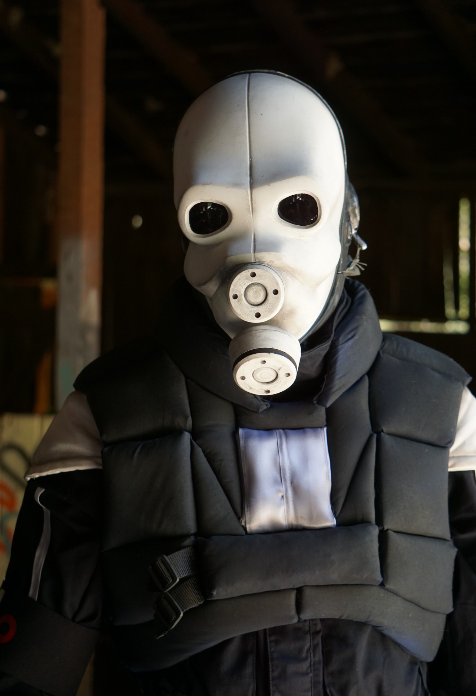
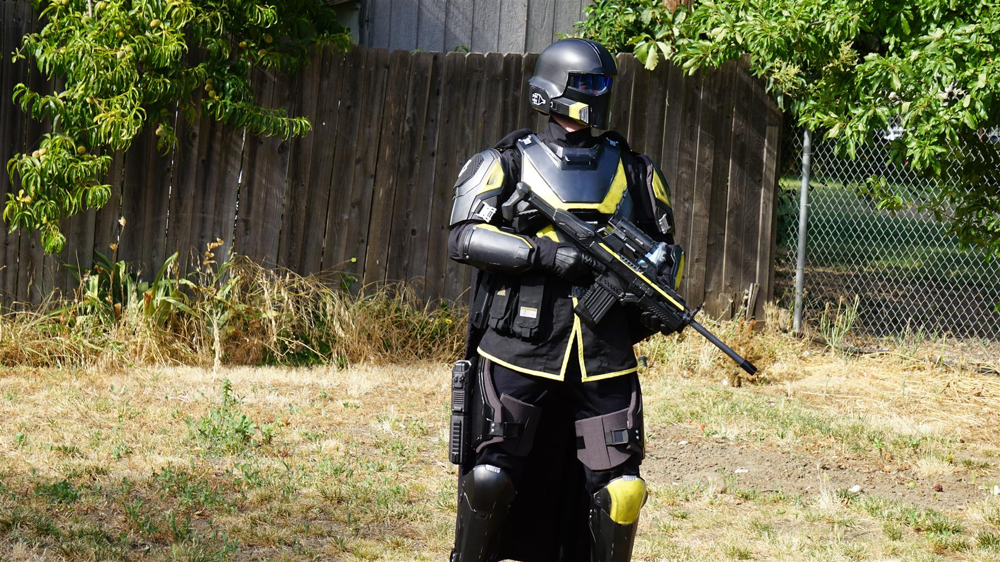
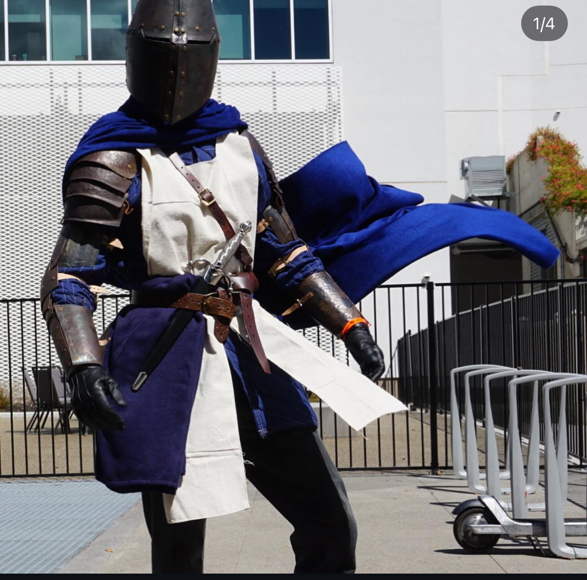
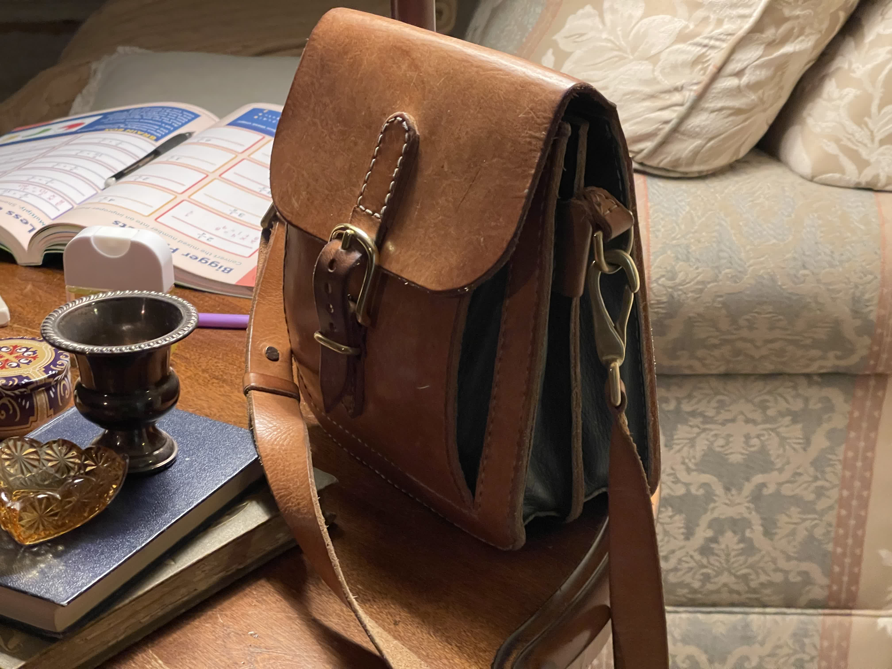
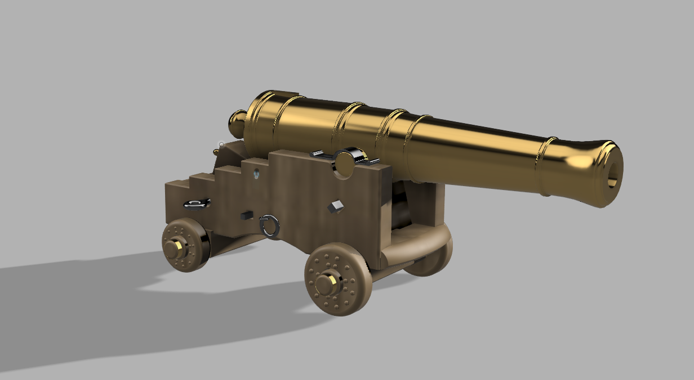
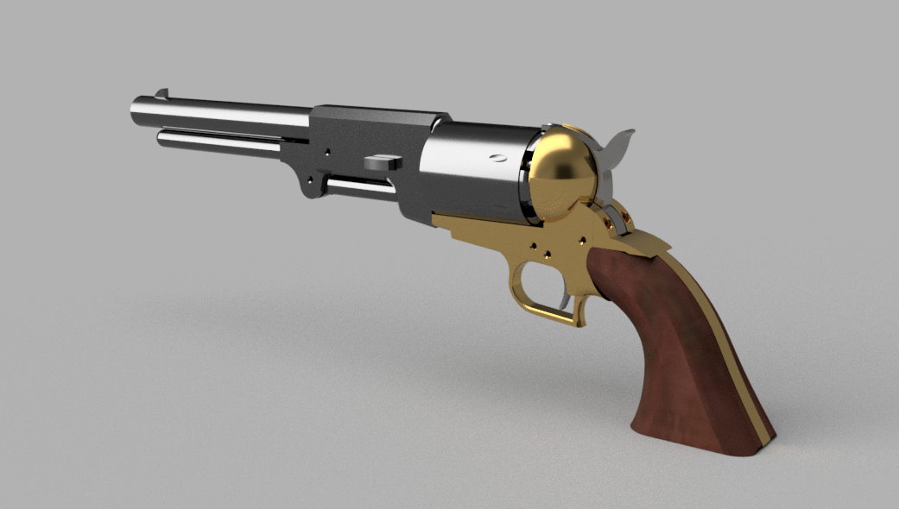

Costumes
Wearable builds with fabrication at the center.
These projects usually combine 3D printing, sewing, finishing, and hardware work. They start with references and become a balancing act between silhouette, comfort, and convincing materials.
Filter by toolset and the cards reshuffle into a new arrangement. The point is not just sorting the list, but letting the page feel active and hands-on.
Costumes
These projects usually combine 3D printing, sewing, finishing, and hardware work. They start with references and become a balancing act between silhouette, comfort, and convincing materials.
CAD
The CAD work leans into clean modeling, historical or found-plan references, and the fun of seeing a digital idea turn into something physical, animated, or ready for a first print.

Metrocop buildScreen-accurate Civil Protection unit with printed armor, fabricated parts, and detailed finishing work.
View project ->

Helldivers test fitFull wearable armor build combining printed panels, sewn soft goods, vinyl work, and airbrushed finish.
View project ->

Completed armor buildA long-running historical armor project built from Nadler patterns and shaped by years of iteration.
View project ->

Leatherwork studiesSmall leather projects where I use pattern-making, tooling, and CAD-assisted stencils to turn gift ideas into polished finished pieces.
View project ->

24-pounder studyA cannon modeled from vintage plans and turned into an early, memorable Fusion 360 exercise.
View project ->

Variant studyA Fusion 360 study in variants, animation, and modular thinking built around one revolver platform.
View project ->
 Clean first print
Clean first print
A compact side project focused on good tolerances, clean CAD, and a satisfying first-print success.
View project ->
A roguelite tower defense game in Godot 4 with procedural runs, strategic placement, and escalating waves.
View project ->